Last updated: 2020-05-20
Checks: 7 0
Knit directory: dissertation/
This reproducible R Markdown analysis was created with workflowr (version 1.6.0). The Checks tab describes the reproducibility checks that were applied when the results were created. The Past versions tab lists the development history.
Great! Since the R Markdown file has been committed to the Git repository, you know the exact version of the code that produced these results.
Great job! The global environment was empty. Objects defined in the global environment can affect the analysis in your R Markdown file in unknown ways. For reproduciblity it’s best to always run the code in an empty environment.
The command set.seed(20200414) was run prior to running the code in the R Markdown file. Setting a seed ensures that any results that rely on randomness, e.g. subsampling or permutations, are reproducible.
Great job! Recording the operating system, R version, and package versions is critical for reproducibility.
Nice! There were no cached chunks for this analysis, so you can be confident that you successfully produced the results during this run.
Great job! Using relative paths to the files within your workflowr project makes it easier to run your code on other machines.
Great! You are using Git for version control. Tracking code development and connecting the code version to the results is critical for reproducibility. The version displayed above was the version of the Git repository at the time these results were generated.
Note that you need to be careful to ensure that all relevant files for the analysis have been committed to Git prior to generating the results (you can use wflow_publish or wflow_git_commit). workflowr only checks the R Markdown file, but you know if there are other scripts or data files that it depends on. Below is the status of the Git repository when the results were generated:
Ignored files:
Ignored: .DS_Store
Ignored: .Rhistory
Ignored: .Rproj.user/
Ignored: analysis/.DS_Store
Ignored: analysis/ICPSR_04652 3/.DS_Store
Ignored: analysis/ICPSR_04652 3/DS0001/.DS_Store
Ignored: analysis/ICPSR_26841/.DS_Store
Ignored: analysis/ICPSR_26841/DS0001/.DS_Store
Ignored: analysis/dataInspection.nb.html
Ignored: analysis/dataWrangling.nb.html
Untracked files:
Untracked: analysis/hyp1Dat.csv
Untracked: analysis/hyp2Dat.csv
Untracked: analysis/lmeResidsPerDay.csv
Untracked: analysis/manuscript copy.docx
Untracked: analysis/manuscript.docx
Untracked: analysis/manuscript.log
Untracked: analysis/manuscript.pdf
Untracked: analysis/manuscript.tex
Untracked: analysis/manuscript/
Untracked: analysis/~$nuscript.docx
Untracked: analysis/~$ssertation_1.8.20.docx
Untracked: hyp1Dat.csv
Untracked: hyp2Dat.csv
Untracked: refs.bib
Unstaged changes:
Modified: analysis/ICPSR_26841/DS0001/26841-0001-Documentation-saliva.pdf
Note that any generated files, e.g. HTML, png, CSS, etc., are not included in this status report because it is ok for generated content to have uncommitted changes.
These are the previous versions of the R Markdown and HTML files. If you’ve configured a remote Git repository (see ?wflow_git_remote), click on the hyperlinks in the table below to view them.
| File | Version | Author | Date | Message |
|---|---|---|---|---|
| Rmd | e5a1419 | sallende | 2020-05-20 | wflow_publish(“analysis/dataInspection.Rmd”) |
| html | aa5d443 | sallende | 2020-05-20 | Build site. |
| Rmd | 71f0506 | sallende | 2020-05-20 | wflow_publish(c(“analysis/index.Rmd”, "analysis/_site.yml", |
Load libraries
library(tidyverse)
options(scipen=999)hyp1Dat <- read_csv("hyp1dat.csv")
hyp2Dat <- read_csv("hyp2Dat.csv")hyp1Dat <- hyp1Dat %>%
mutate_at(vars(negPanas, posPanas), ~na_if(., 8))
hyp2Dat <- hyp2Dat %>%
#filter(dailyMeanNegAff <= 4)
mutate_at(vars(contains("daily")), ~na_if(., 7)) %>%
mutate_at(vars(contains("daily")), ~na_if(., 8)) %>%
mutate_at(vars(contains("daily")), ~na_if(., 9))
#need to assign na for rest of vars# convert to factors
hyp1Dat <- hyp1Dat %>%
mutate(gender = factor(gender, levels = c(1, 2),
labels = c("male", "female"))) %>%
mutate(medUseNone1Yes = factor(medUseNone1Yes, levels = c(1, 2, 8),
labels = c("yes", "no", "missing"))) %>%
mutate(ethnicity = factor(ethnicity, levels = c(1, 2, 3, 4, 6, 7, 8),
labels = c("caucasian", "africanAmerican",
"nativeAmerican", "asian", "other",
"dontKnow", "refused"))) %>%
mutate(education = factor(education, levels = c(1, 2, 3, 4, 5, 6, 7, 8, 9,
10, 11, 12, 97),
labels = c("grades16", "grades78", "grades\n912NoGed",
"ged", "hsGrad", "college\n12YrNoDegree",
"college\n3OrMore\nYrNoDegree",
"college\n2YrGrad", "college\n4YrGrad",
"some\nGradSchl", "master\nDegree",
"doctoral\nDegree", "dontKnow"))) %>%
mutate(smoker = factor(smoker, levels = c(1, 2, 9),
labels = c("yes", "no", "inapp")))# gender
hyp1Dat %>%
group_by(gender) %>%
ggplot(., aes(gender)) +
geom_bar(aes(fill = gender)) +
geom_text(stat='count', aes(label = scales::percent(round(prop.table(stat(count)), 3))), vjust=-.50,
color = "gray29", size = 3)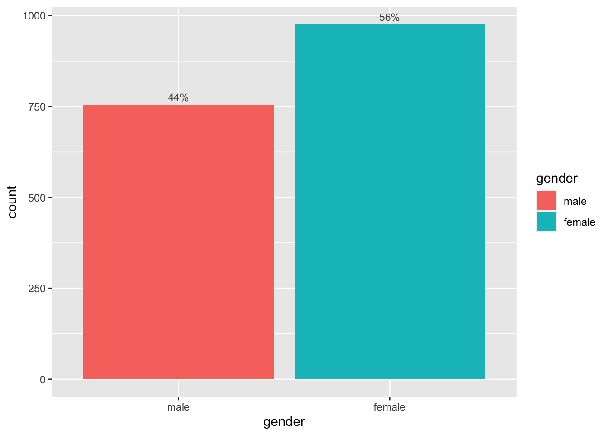
| Version | Author | Date |
|---|---|---|
| aa5d443 | sallende | 2020-05-20 |
# medication use
hyp1Dat %>%
group_by(medUseNone1Yes) %>%
ggplot(., aes(medUseNone1Yes)) +
geom_bar(aes(fill = medUseNone1Yes)) +
geom_text(stat='count', aes(label = scales::percent(round(prop.table(stat(count)), 4))), vjust=-.50,
color = "gray29", size = 3)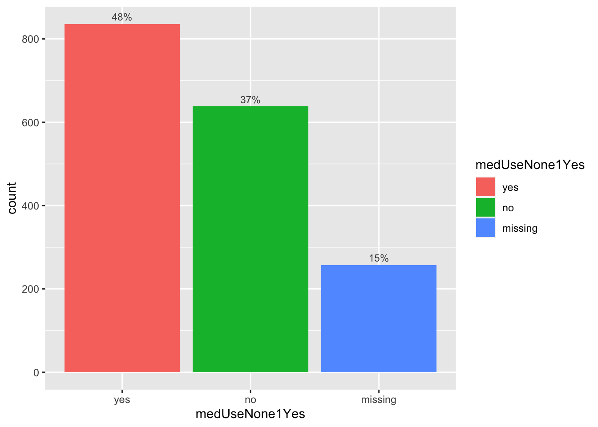
| Version | Author | Date |
|---|---|---|
| aa5d443 | sallende | 2020-05-20 |
# ethnicity
hyp1Dat %>%
group_by(ethnicity) %>%
ggplot(., aes(ethnicity)) +
geom_bar(aes(fill = ethnicity)) +
geom_text(stat='count', aes(label = scales::percent(round(prop.table(stat(count)), 3))), vjust=-.50,
color = "gray29", size = 3) +
theme(axis.text.x = element_text(angle = 10))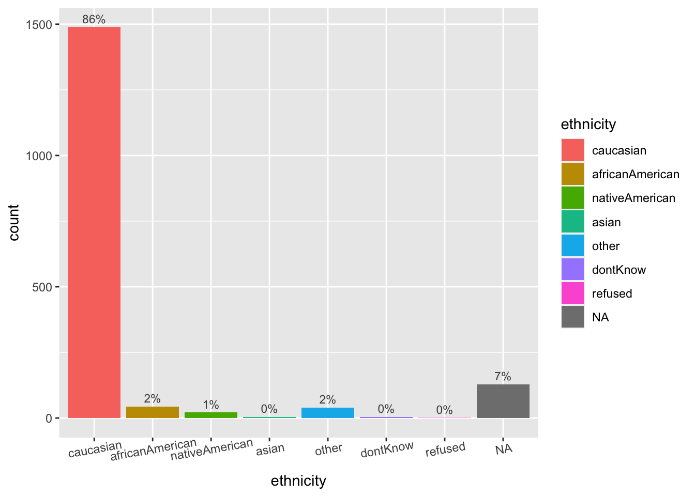
| Version | Author | Date |
|---|---|---|
| aa5d443 | sallende | 2020-05-20 |
# education
hyp1Dat %>%
mutate(education = factor(education, levels = c("hsGrad", "college\n4YrGrad",
"college\n12YrNoDegree", "master\nDegree",
"NA", "college\n2YrGrad", "doctoral\nDegree",
"college\n3OrMore\nYrNoDegree",
"some\nGradSchl", "grades\n912NoGed",
"grades78", "ged", "grades16",
"dontKnow"))) %>%
group_by(education) %>%
ggplot(., aes(education)) +
geom_bar(aes(fill = education)) +
geom_text(stat='count', aes(label = scales::percent(round(prop.table(stat(count)), 4))), vjust=-.50,
color = "gray29", size = 2.5) +
theme(axis.text.x = element_text(angle = 90)) +
ylim(0, 400)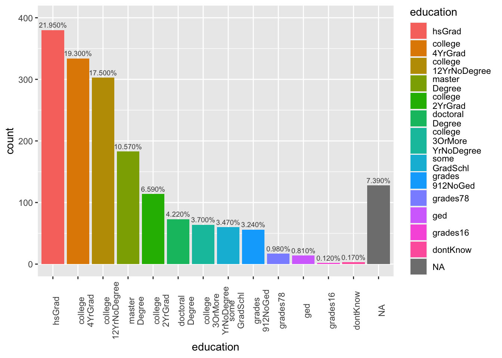
| Version | Author | Date |
|---|---|---|
| aa5d443 | sallende | 2020-05-20 |
# smoker
ggplot(hyp1Dat, aes(smoker)) +
geom_bar(aes(fill = smoker)) +
geom_text(stat='count', aes(label = scales::percent(prop.table(stat(count)))), vjust=-.50,
color = "gray29") 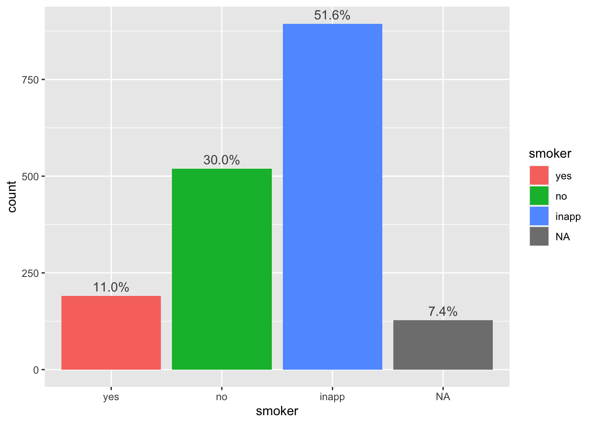
| Version | Author | Date |
|---|---|---|
| aa5d443 | sallende | 2020-05-20 |
hyp1Dat %>%
summarise_if(is.numeric,
funs(sum(is.na(.)))) %>%
pivot_longer(1:39, names_to = "summaryStats", values_to = "numberOfNAs") %>% print(n = Inf)# A tibble: 39 x 22
traitBelong traitEnthusiast… traitAttentive traitProud traitActive
<int> <int> <int> <int> <int>
1 167 167 167 167 167
2 167 167 167 167 167
3 167 167 167 167 167
4 167 167 167 167 167
5 167 167 167 167 167
6 167 167 167 167 167
7 167 167 167 167 167
8 167 167 167 167 167
9 167 167 167 167 167
10 167 167 167 167 167
11 167 167 167 167 167
12 167 167 167 167 167
13 167 167 167 167 167
14 167 167 167 167 167
15 167 167 167 167 167
16 167 167 167 167 167
17 167 167 167 167 167
18 167 167 167 167 167
19 167 167 167 167 167
20 167 167 167 167 167
21 167 167 167 167 167
22 167 167 167 167 167
23 167 167 167 167 167
24 167 167 167 167 167
25 167 167 167 167 167
26 167 167 167 167 167
27 167 167 167 167 167
28 167 167 167 167 167
29 167 167 167 167 167
30 167 167 167 167 167
31 167 167 167 167 167
32 167 167 167 167 167
33 167 167 167 167 167
34 167 167 167 167 167
35 167 167 167 167 167
36 167 167 167 167 167
37 167 167 167 167 167
38 167 167 167 167 167
39 167 167 167 167 167
# … with 17 more variables: traitConfident <int>, traitSoSadNoCheer <int>,
# traitNervous <int>, traitRestless <int>, traitHopeless <int>,
# traitEverythingAnEffort <int>, traitWorthless <int>, traitLonely <int>,
# traitAfraid <int>, traitJittery <int>, traitIrritable <int>,
# traitAshamed <int>, traitUpset <int>, traitAngry <int>,
# traitFrustrated <int>, summaryStats <chr>, numberOfNAs <int>hyp1Dat %>%
summarise_if(is.numeric,
lst(mean, median, sd, min, max),
na.rm = T) %>%
pivot_longer(1:195, names_to = "summaryStats", values_to = "values") %>%
print(n = Inf) %>%
separate(summaryStats, c("variable", "stat"), "_") %>%
arrange(variable)# A tibble: 195 x 102
agency_min perceivedContro… sympathy_min gernativity_min spirituality_min
<dbl> <dbl> <dbl> <dbl> <dbl>
1 1 1.08 1.75 6 2
2 1 1.08 1.75 6 2
3 1 1.08 1.75 6 2
4 1 1.08 1.75 6 2
5 1 1.08 1.75 6 2
6 1 1.08 1.75 6 2
7 1 1.08 1.75 6 2
8 1 1.08 1.75 6 2
9 1 1.08 1.75 6 2
10 1 1.08 1.75 6 2
11 1 1.08 1.75 6 2
12 1 1.08 1.75 6 2
13 1 1.08 1.75 6 2
14 1 1.08 1.75 6 2
15 1 1.08 1.75 6 2
16 1 1.08 1.75 6 2
17 1 1.08 1.75 6 2
18 1 1.08 1.75 6 2
19 1 1.08 1.75 6 2
20 1 1.08 1.75 6 2
21 1 1.08 1.75 6 2
22 1 1.08 1.75 6 2
23 1 1.08 1.75 6 2
24 1 1.08 1.75 6 2
25 1 1.08 1.75 6 2
26 1 1.08 1.75 6 2
27 1 1.08 1.75 6 2
28 1 1.08 1.75 6 2
29 1 1.08 1.75 6 2
30 1 1.08 1.75 6 2
31 1 1.08 1.75 6 2
32 1 1.08 1.75 6 2
33 1 1.08 1.75 6 2
34 1 1.08 1.75 6 2
35 1 1.08 1.75 6 2
36 1 1.08 1.75 6 2
37 1 1.08 1.75 6 2
38 1 1.08 1.75 6 2
39 1 1.08 1.75 6 2
40 1 1.08 1.75 6 2
41 1 1.08 1.75 6 2
42 1 1.08 1.75 6 2
43 1 1.08 1.75 6 2
44 1 1.08 1.75 6 2
45 1 1.08 1.75 6 2
46 1 1.08 1.75 6 2
47 1 1.08 1.75 6 2
48 1 1.08 1.75 6 2
49 1 1.08 1.75 6 2
50 1 1.08 1.75 6 2
51 1 1.08 1.75 6 2
52 1 1.08 1.75 6 2
53 1 1.08 1.75 6 2
54 1 1.08 1.75 6 2
55 1 1.08 1.75 6 2
56 1 1.08 1.75 6 2
57 1 1.08 1.75 6 2
58 1 1.08 1.75 6 2
59 1 1.08 1.75 6 2
60 1 1.08 1.75 6 2
61 1 1.08 1.75 6 2
62 1 1.08 1.75 6 2
63 1 1.08 1.75 6 2
64 1 1.08 1.75 6 2
65 1 1.08 1.75 6 2
66 1 1.08 1.75 6 2
67 1 1.08 1.75 6 2
68 1 1.08 1.75 6 2
69 1 1.08 1.75 6 2
70 1 1.08 1.75 6 2
71 1 1.08 1.75 6 2
72 1 1.08 1.75 6 2
73 1 1.08 1.75 6 2
74 1 1.08 1.75 6 2
75 1 1.08 1.75 6 2
76 1 1.08 1.75 6 2
77 1 1.08 1.75 6 2
78 1 1.08 1.75 6 2
79 1 1.08 1.75 6 2
80 1 1.08 1.75 6 2
81 1 1.08 1.75 6 2
82 1 1.08 1.75 6 2
83 1 1.08 1.75 6 2
84 1 1.08 1.75 6 2
85 1 1.08 1.75 6 2
86 1 1.08 1.75 6 2
87 1 1.08 1.75 6 2
88 1 1.08 1.75 6 2
89 1 1.08 1.75 6 2
90 1 1.08 1.75 6 2
91 1 1.08 1.75 6 2
92 1 1.08 1.75 6 2
93 1 1.08 1.75 6 2
94 1 1.08 1.75 6 2
95 1 1.08 1.75 6 2
96 1 1.08 1.75 6 2
97 1 1.08 1.75 6 2
98 1 1.08 1.75 6 2
99 1 1.08 1.75 6 2
100 1 1.08 1.75 6 2
101 1 1.08 1.75 6 2
102 1 1.08 1.75 6 2
103 1 1.08 1.75 6 2
104 1 1.08 1.75 6 2
105 1 1.08 1.75 6 2
106 1 1.08 1.75 6 2
107 1 1.08 1.75 6 2
108 1 1.08 1.75 6 2
109 1 1.08 1.75 6 2
110 1 1.08 1.75 6 2
111 1 1.08 1.75 6 2
112 1 1.08 1.75 6 2
113 1 1.08 1.75 6 2
114 1 1.08 1.75 6 2
115 1 1.08 1.75 6 2
116 1 1.08 1.75 6 2
117 1 1.08 1.75 6 2
118 1 1.08 1.75 6 2
119 1 1.08 1.75 6 2
120 1 1.08 1.75 6 2
121 1 1.08 1.75 6 2
122 1 1.08 1.75 6 2
123 1 1.08 1.75 6 2
124 1 1.08 1.75 6 2
125 1 1.08 1.75 6 2
126 1 1.08 1.75 6 2
127 1 1.08 1.75 6 2
128 1 1.08 1.75 6 2
129 1 1.08 1.75 6 2
130 1 1.08 1.75 6 2
131 1 1.08 1.75 6 2
132 1 1.08 1.75 6 2
133 1 1.08 1.75 6 2
134 1 1.08 1.75 6 2
135 1 1.08 1.75 6 2
136 1 1.08 1.75 6 2
137 1 1.08 1.75 6 2
138 1 1.08 1.75 6 2
139 1 1.08 1.75 6 2
140 1 1.08 1.75 6 2
141 1 1.08 1.75 6 2
142 1 1.08 1.75 6 2
143 1 1.08 1.75 6 2
144 1 1.08 1.75 6 2
145 1 1.08 1.75 6 2
146 1 1.08 1.75 6 2
147 1 1.08 1.75 6 2
148 1 1.08 1.75 6 2
149 1 1.08 1.75 6 2
150 1 1.08 1.75 6 2
151 1 1.08 1.75 6 2
152 1 1.08 1.75 6 2
153 1 1.08 1.75 6 2
154 1 1.08 1.75 6 2
155 1 1.08 1.75 6 2
156 1 1.08 1.75 6 2
157 1 1.08 1.75 6 2
158 1 1.08 1.75 6 2
159 1 1.08 1.75 6 2
160 1 1.08 1.75 6 2
161 1 1.08 1.75 6 2
162 1 1.08 1.75 6 2
163 1 1.08 1.75 6 2
164 1 1.08 1.75 6 2
165 1 1.08 1.75 6 2
166 1 1.08 1.75 6 2
167 1 1.08 1.75 6 2
168 1 1.08 1.75 6 2
169 1 1.08 1.75 6 2
170 1 1.08 1.75 6 2
171 1 1.08 1.75 6 2
172 1 1.08 1.75 6 2
173 1 1.08 1.75 6 2
174 1 1.08 1.75 6 2
175 1 1.08 1.75 6 2
176 1 1.08 1.75 6 2
177 1 1.08 1.75 6 2
178 1 1.08 1.75 6 2
179 1 1.08 1.75 6 2
180 1 1.08 1.75 6 2
181 1 1.08 1.75 6 2
182 1 1.08 1.75 6 2
183 1 1.08 1.75 6 2
184 1 1.08 1.75 6 2
185 1 1.08 1.75 6 2
186 1 1.08 1.75 6 2
187 1 1.08 1.75 6 2
188 1 1.08 1.75 6 2
189 1 1.08 1.75 6 2
190 1 1.08 1.75 6 2
191 1 1.08 1.75 6 2
192 1 1.08 1.75 6 2
193 1 1.08 1.75 6 2
194 1 1.08 1.75 6 2
195 1 1.08 1.75 6 2
# … with 97 more variables: religiousIdent_min <dbl>,
# religiousPractice_min <dbl>, religiousSupport_min <dbl>,
# religiousSpiritualCoping_min <dbl>, dailySpiritualExperiences_min <dbl>,
# mindfulnessDueToRelSpir_min <dbl>, mentalHealthTx_min <dbl>,
# posPanas_min <dbl>, negPanas_min <dbl>, traitCheerful_min <dbl>,
# traitGoodSpirits_min <dbl>, traitExtremelyHappy_min <dbl>,
# traitCalmPeaceful_min <dbl>, traitSatisfied_min <dbl>,
# traitFullOfLife_min <dbl>, traitCloseOthers_min <dbl>,
# traitBelong_min <dbl>, traitEnthusiastic_min <dbl>,
# traitAttentive_min <dbl>, traitProud_min <dbl>, traitActive_min <dbl>,
# traitConfident_min <dbl>, traitSoSadNoCheer_min <dbl>,
# traitNervous_min <dbl>, traitRestless_min <dbl>, traitHopeless_min <dbl>,
# traitEverythingAnEffort_min <dbl>, traitWorthless_min <dbl>,
# traitLonely_min <dbl>, traitAfraid_min <dbl>, traitJittery_min <dbl>,
# traitIrritable_min <dbl>, traitAshamed_min <dbl>, traitUpset_min <dbl>,
# traitAngry_min <dbl>, traitFrustrated_min <dbl>, id_max <dbl>,
# age_max <dbl>, car_max <dbl>, aucTot_max <dbl>, lmmCortSlope_max <dbl>,
# leastSquaresCortSlope_max <dbl>, hyp1LmmUncCiiv_max <dbl>,
# hyp1LmmCondCiiv_max <dbl>, hyp1SdUncCiiv_max <dbl>,
# hyp1LsCondCiiv_max <dbl>, dep_max <dbl>, gad_max <dbl>,
# somaticAmplification_max <dbl>, neuroticism_max <dbl>,
# extraversion_max <dbl>, opennessToExp_max <dbl>,
# conscientiousness_max <dbl>, agreeableness_max <dbl>, agency_max <dbl>,
# perceivedControl_max <dbl>, sympathy_max <dbl>, gernativity_max <dbl>,
# spirituality_max <dbl>, religiousIdent_max <dbl>,
# religiousPractice_max <dbl>, religiousSupport_max <dbl>,
# religiousSpiritualCoping_max <dbl>, dailySpiritualExperiences_max <dbl>,
# mindfulnessDueToRelSpir_max <dbl>, mentalHealthTx_max <dbl>,
# posPanas_max <dbl>, negPanas_max <dbl>, traitCheerful_max <dbl>,
# traitGoodSpirits_max <dbl>, traitExtremelyHappy_max <dbl>,
# traitCalmPeaceful_max <dbl>, traitSatisfied_max <dbl>,
# traitFullOfLife_max <dbl>, traitCloseOthers_max <dbl>,
# traitBelong_max <dbl>, traitEnthusiastic_max <dbl>,
# traitAttentive_max <dbl>, traitProud_max <dbl>, traitActive_max <dbl>,
# traitConfident_max <dbl>, traitSoSadNoCheer_max <dbl>,
# traitNervous_max <dbl>, traitRestless_max <dbl>, traitHopeless_max <dbl>,
# traitEverythingAnEffort_max <dbl>, traitWorthless_max <dbl>,
# traitLonely_max <dbl>, traitAfraid_max <dbl>, traitJittery_max <dbl>,
# traitIrritable_max <dbl>, traitAshamed_max <dbl>, traitUpset_max <dbl>,
# traitAngry_max <dbl>, traitFrustrated_max <dbl>, summaryStats <chr>,
# values <dbl># A tibble: 195 x 103
agency_min perceivedContro… sympathy_min gernativity_min spirituality_min
<dbl> <dbl> <dbl> <dbl> <dbl>
1 1 1.08 1.75 6 2
2 1 1.08 1.75 6 2
3 1 1.08 1.75 6 2
4 1 1.08 1.75 6 2
5 1 1.08 1.75 6 2
6 1 1.08 1.75 6 2
7 1 1.08 1.75 6 2
8 1 1.08 1.75 6 2
9 1 1.08 1.75 6 2
10 1 1.08 1.75 6 2
# … with 185 more rows, and 98 more variables: religiousIdent_min <dbl>,
# religiousPractice_min <dbl>, religiousSupport_min <dbl>,
# religiousSpiritualCoping_min <dbl>, dailySpiritualExperiences_min <dbl>,
# mindfulnessDueToRelSpir_min <dbl>, mentalHealthTx_min <dbl>,
# posPanas_min <dbl>, negPanas_min <dbl>, traitCheerful_min <dbl>,
# traitGoodSpirits_min <dbl>, traitExtremelyHappy_min <dbl>,
# traitCalmPeaceful_min <dbl>, traitSatisfied_min <dbl>,
# traitFullOfLife_min <dbl>, traitCloseOthers_min <dbl>,
# traitBelong_min <dbl>, traitEnthusiastic_min <dbl>,
# traitAttentive_min <dbl>, traitProud_min <dbl>, traitActive_min <dbl>,
# traitConfident_min <dbl>, traitSoSadNoCheer_min <dbl>,
# traitNervous_min <dbl>, traitRestless_min <dbl>, traitHopeless_min <dbl>,
# traitEverythingAnEffort_min <dbl>, traitWorthless_min <dbl>,
# traitLonely_min <dbl>, traitAfraid_min <dbl>, traitJittery_min <dbl>,
# traitIrritable_min <dbl>, traitAshamed_min <dbl>, traitUpset_min <dbl>,
# traitAngry_min <dbl>, traitFrustrated_min <dbl>, id_max <dbl>,
# age_max <dbl>, car_max <dbl>, aucTot_max <dbl>, lmmCortSlope_max <dbl>,
# leastSquaresCortSlope_max <dbl>, hyp1LmmUncCiiv_max <dbl>,
# hyp1LmmCondCiiv_max <dbl>, hyp1SdUncCiiv_max <dbl>,
# hyp1LsCondCiiv_max <dbl>, dep_max <dbl>, gad_max <dbl>,
# somaticAmplification_max <dbl>, neuroticism_max <dbl>,
# extraversion_max <dbl>, opennessToExp_max <dbl>,
# conscientiousness_max <dbl>, agreeableness_max <dbl>, agency_max <dbl>,
# perceivedControl_max <dbl>, sympathy_max <dbl>, gernativity_max <dbl>,
# spirituality_max <dbl>, religiousIdent_max <dbl>,
# religiousPractice_max <dbl>, religiousSupport_max <dbl>,
# religiousSpiritualCoping_max <dbl>, dailySpiritualExperiences_max <dbl>,
# mindfulnessDueToRelSpir_max <dbl>, mentalHealthTx_max <dbl>,
# posPanas_max <dbl>, negPanas_max <dbl>, traitCheerful_max <dbl>,
# traitGoodSpirits_max <dbl>, traitExtremelyHappy_max <dbl>,
# traitCalmPeaceful_max <dbl>, traitSatisfied_max <dbl>,
# traitFullOfLife_max <dbl>, traitCloseOthers_max <dbl>,
# traitBelong_max <dbl>, traitEnthusiastic_max <dbl>,
# traitAttentive_max <dbl>, traitProud_max <dbl>, traitActive_max <dbl>,
# traitConfident_max <dbl>, traitSoSadNoCheer_max <dbl>,
# traitNervous_max <dbl>, traitRestless_max <dbl>, traitHopeless_max <dbl>,
# traitEverythingAnEffort_max <dbl>, traitWorthless_max <dbl>,
# traitLonely_max <dbl>, traitAfraid_max <dbl>, traitJittery_max <dbl>,
# traitIrritable_max <dbl>, traitAshamed_max <dbl>, traitUpset_max <dbl>,
# traitAngry_max <dbl>, traitFrustrated_max <dbl>, variable <chr>,
# stat <chr>, values <dbl>hyp1Dat %>%
select(car, aucTot, lmmCortSlope, hyp1LmmUncCiiv, hyp1LmmCondCiiv,
hyp1LsCondCiiv) %>%
GGally::ggpairs(.)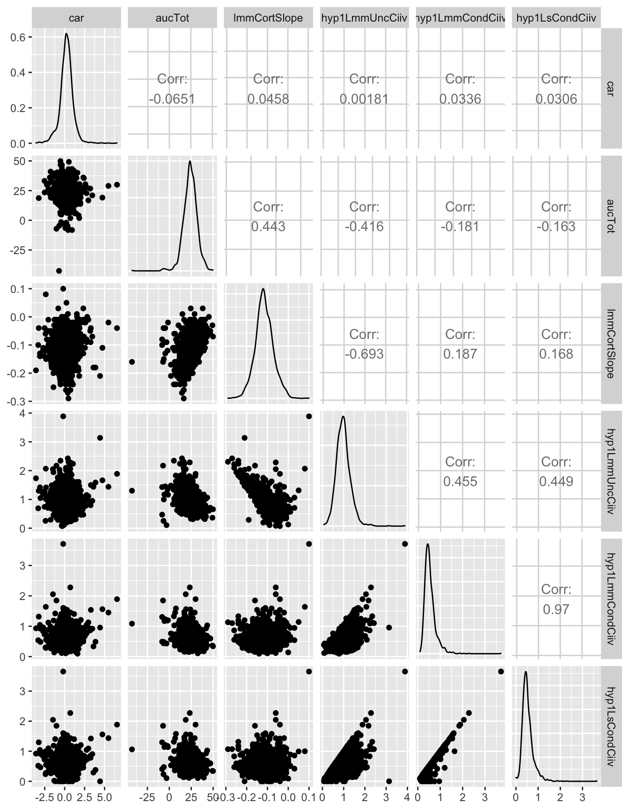
| Version | Author | Date |
|---|---|---|
| aa5d443 | sallende | 2020-05-20 |
ggplot(hyp1Dat, aes(hyp1LmmCondCiiv)) +
geom_histogram(binwidth = .1)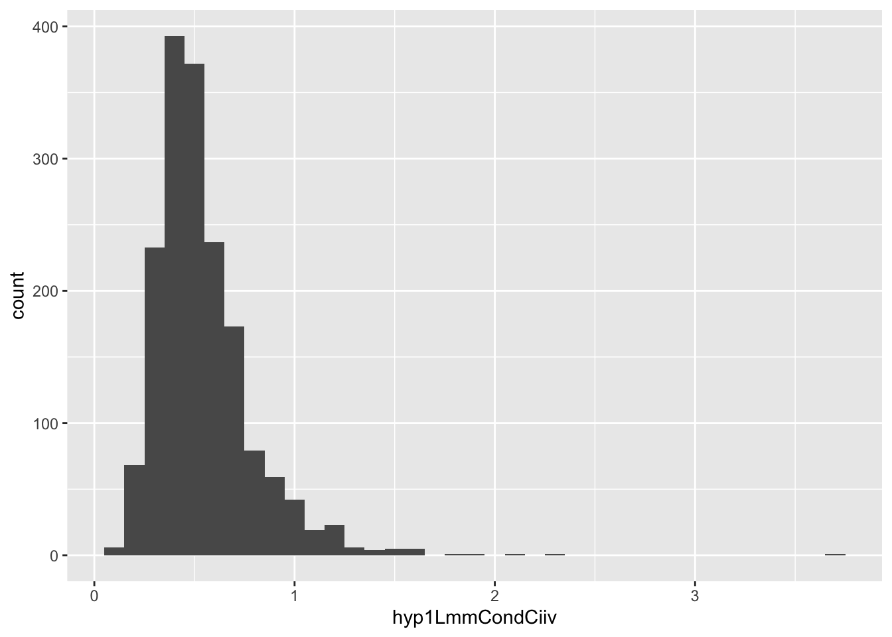
| Version | Author | Date |
|---|---|---|
| aa5d443 | sallende | 2020-05-20 |
hyp2Dat %>%
group_by(day) %>%
summarise(meanPosAffectPerDay = mean(dailyMeanPosAff, na.rm = T),
meanNegAffectPerDay = mean(dailyMeanNegAff, na.rm = T))
# A tibble: 4 x 3
day meanPosAffectPerDay meanNegAffectPerDay
<dbl> <dbl> <dbl>
1 2 2.74 0.218
2 3 2.77 0.186
3 4 2.76 0.190
4 5 2.77 0.157hyp2Dat %>%
filter(day == 2) %>%
ggplot(aes(dailyMeanPosAff)) +
geom_histogram(binwidth = .3)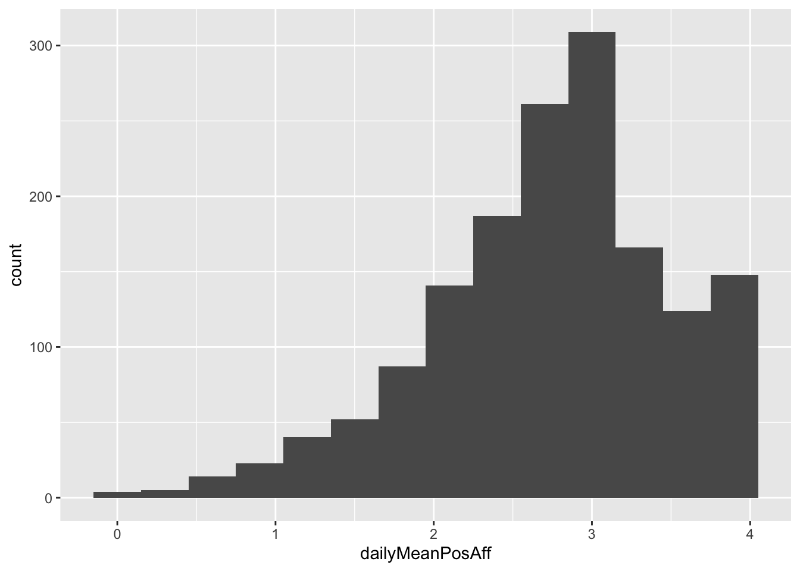
| Version | Author | Date |
|---|---|---|
| aa5d443 | sallende | 2020-05-20 |
hyp2Dat %>%
filter(day == 2) %>%
ggplot(aes(dailyMeanNegAff)) +
geom_histogram(binwidth = .1)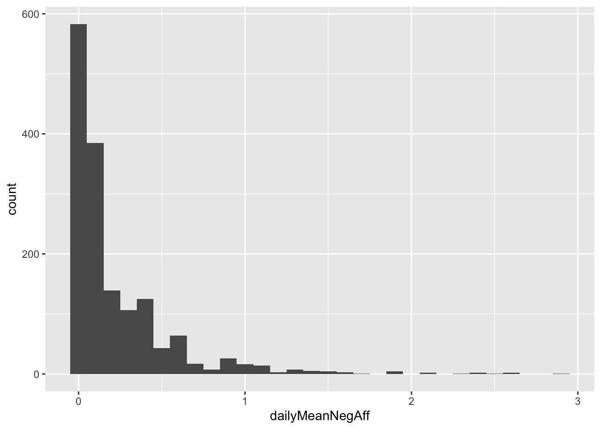
| Version | Author | Date |
|---|---|---|
| aa5d443 | sallende | 2020-05-20 |
hyp2Dat %>%
filter(day == 3) %>%
ggplot(aes(dailyMeanPosAff)) +
geom_histogram(binwidth = .3)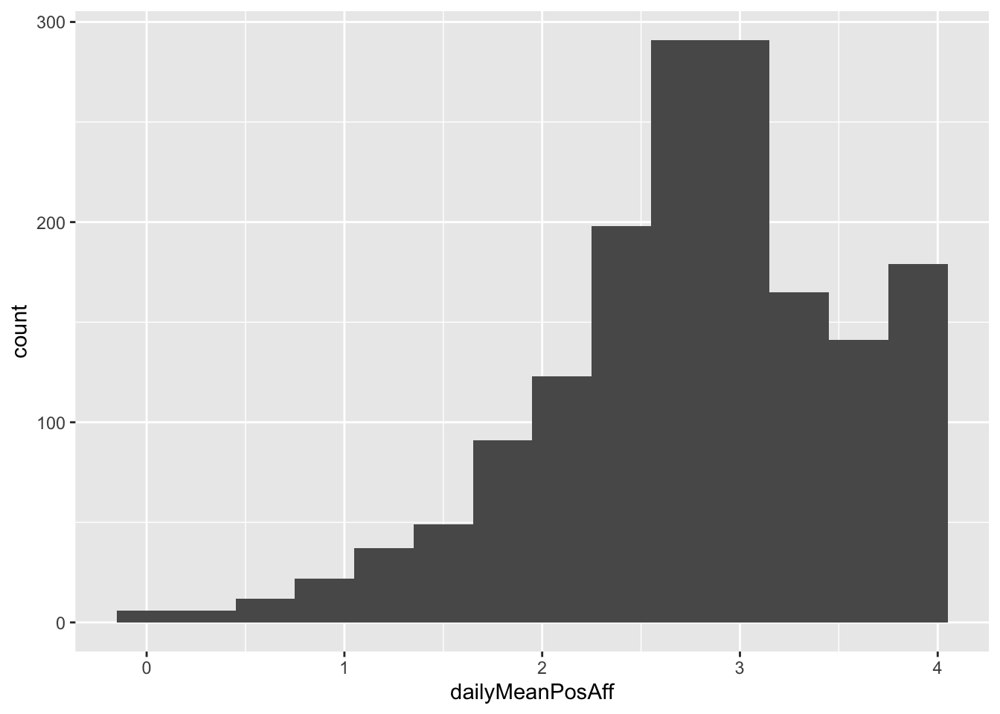
| Version | Author | Date |
|---|---|---|
| aa5d443 | sallende | 2020-05-20 |
hyp2Dat %>%
filter(day == 3) %>%
ggplot(aes(dailyMeanNegAff)) +
geom_histogram(binwidth = .1)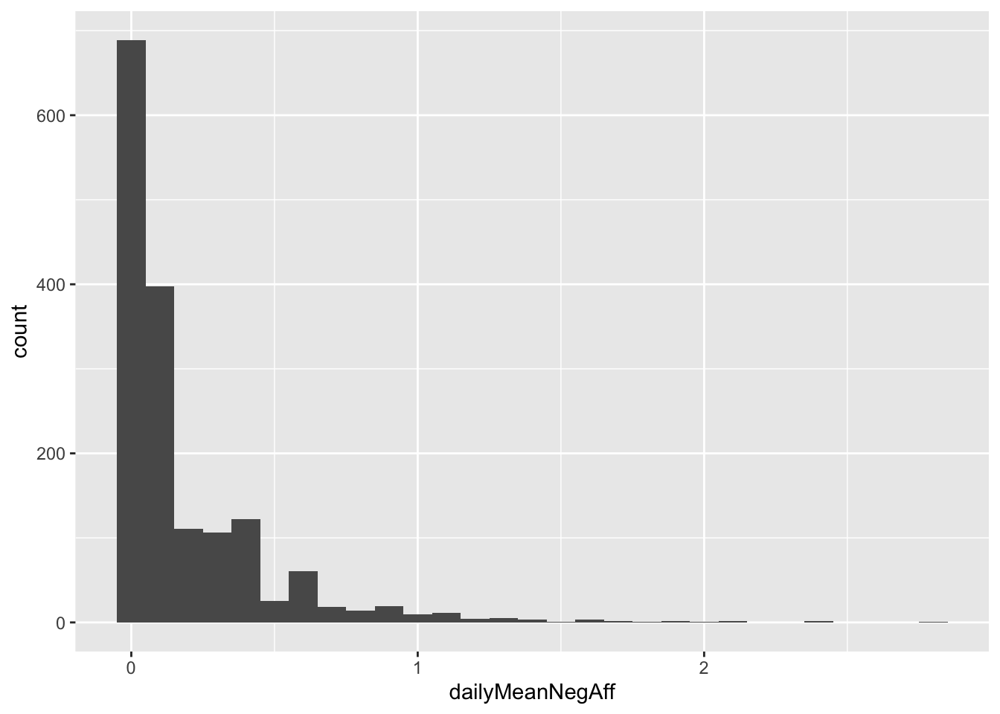
| Version | Author | Date |
|---|---|---|
| aa5d443 | sallende | 2020-05-20 |
hyp2Dat %>%
filter(day == 4) %>%
ggplot(aes(dailyMeanPosAff)) +
geom_histogram(binwidth = .1)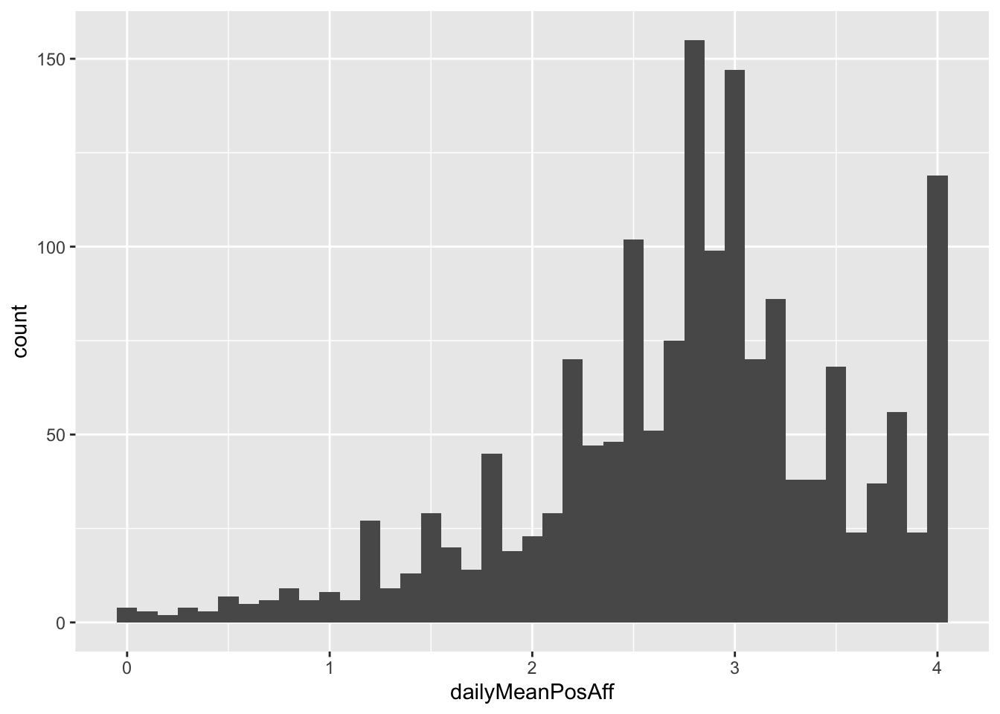
| Version | Author | Date |
|---|---|---|
| aa5d443 | sallende | 2020-05-20 |
hyp2Dat %>%
filter(day == 4) %>%
ggplot(aes(dailyMeanNegAff)) +
geom_histogram(binwidth = .1)
| Version | Author | Date |
|---|---|---|
| aa5d443 | sallende | 2020-05-20 |
hyp2Dat %>%
filter(day == 4) %>%
ggplot(aes(dailyMeanPosAff)) +
geom_histogram(binwidth = .1)
| Version | Author | Date |
|---|---|---|
| aa5d443 | sallende | 2020-05-20 |
hyp2Dat %>%
filter(day == 4) %>%
ggplot(aes(dailyMeanNegAff)) +
geom_histogram(binwidth = .1)
| Version | Author | Date |
|---|---|---|
| aa5d443 | sallende | 2020-05-20 |
hyp2Dat %>%
filter(day == 5) %>%
ggplot(aes(dailyMeanPosAff)) +
geom_histogram(binwidth = .1)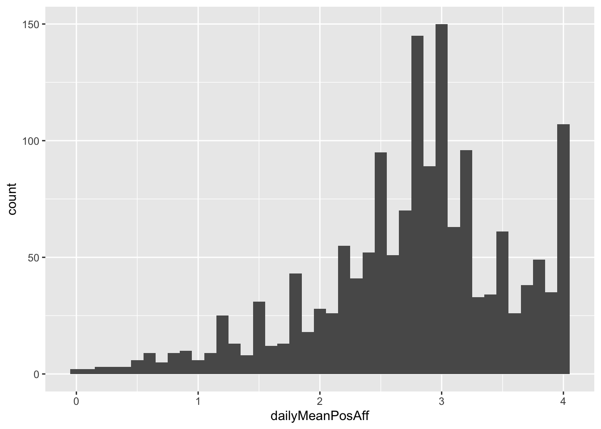
| Version | Author | Date |
|---|---|---|
| aa5d443 | sallende | 2020-05-20 |
hyp2Dat %>%
filter(day == 5) %>%
ggplot(aes(dailyMeanNegAff)) +
geom_histogram(binwidth = .1)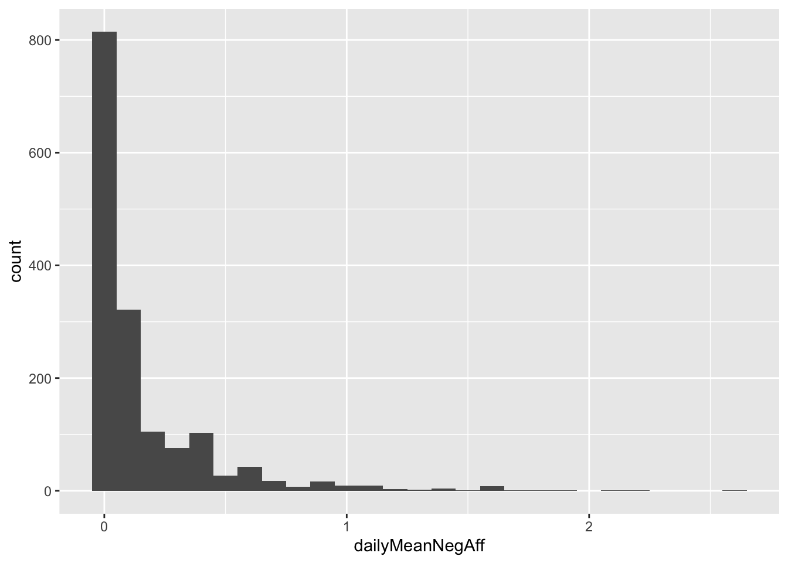
| Version | Author | Date |
|---|---|---|
| aa5d443 | sallende | 2020-05-20 |
sessionInfo()R version 3.5.1 (2018-07-02)
Platform: x86_64-apple-darwin15.6.0 (64-bit)
Running under: macOS Sierra 10.12.6
Matrix products: default
BLAS: /Library/Frameworks/R.framework/Versions/3.5/Resources/lib/libRblas.0.dylib
LAPACK: /Library/Frameworks/R.framework/Versions/3.5/Resources/lib/libRlapack.dylib
locale:
[1] en_US.UTF-8/en_US.UTF-8/en_US.UTF-8/C/en_US.UTF-8/en_US.UTF-8
attached base packages:
[1] stats graphics grDevices utils datasets methods base
other attached packages:
[1] forcats_0.5.0 stringr_1.4.0 dplyr_0.8.4 purrr_0.3.3
[5] readr_1.3.1 tidyr_1.0.2 tibble_2.1.3 ggplot2_3.3.0
[9] tidyverse_1.2.1 workflowr_1.6.0
loaded via a namespace (and not attached):
[1] tidyselect_1.0.0 xfun_0.12 haven_2.2.0 lattice_0.20-35
[5] colorspace_1.3-2 vctrs_0.2.4 generics_0.0.2 htmltools_0.3.6
[9] yaml_2.2.1 utf8_1.1.4 rlang_0.4.5 later_0.7.4
[13] pillar_1.4.3 withr_2.1.2 glue_1.3.2 RColorBrewer_1.1-2
[17] modelr_0.1.2 readxl_1.3.1 plyr_1.8.6 lifecycle_0.2.0
[21] munsell_0.5.0 gtable_0.3.0 cellranger_1.1.0 rvest_0.3.2
[25] evaluate_0.14 GGally_1.5.0 labeling_0.3 knitr_1.28
[29] httpuv_1.4.5 fansi_0.4.1 broom_0.5.2 Rcpp_1.0.4
[33] promises_1.0.1 backports_1.1.4 scales_1.1.0 jsonlite_1.6
[37] farver_2.0.3 fs_1.3.1 hms_0.5.3 digest_0.6.25
[41] stringi_1.4.6 grid_3.5.1 rprojroot_1.3-2 cli_2.0.2
[45] tools_3.5.1 magrittr_1.5 crayon_1.3.4 whisker_0.3-2
[49] pkgconfig_2.0.3 ellipsis_0.3.0 xml2_1.2.0 lubridate_1.7.4
[53] reshape_0.8.7 assertthat_0.2.1 rmarkdown_1.13 httr_1.3.1
[57] rstudioapi_0.11 R6_2.4.1 nlme_3.1-145 git2r_0.26.1
[61] compiler_3.5.1